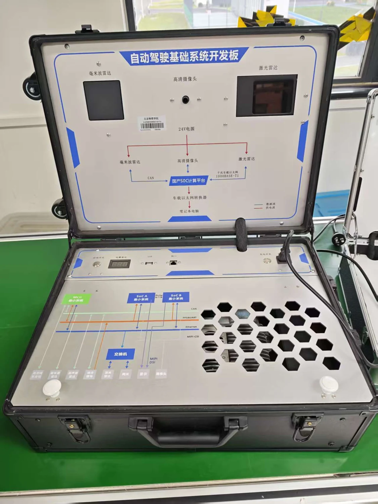

实物标识
照片中设备标注为“自动驾驶基础系统开发板”。上盖标示毫米波雷达、高清摄像头与激光雷达，下部包括 MCU、SoC A / B 最小系统、交换机及各类接口。

图示连接关系
- 毫米波雷达通过 CAN 接入计算平台。
- 激光雷达通过千兆单对以太网接入，面板标注 1000BASE-T1。
- 摄像头与计算平台连接，图示包含 MIPI-CSI 等接口。
- 平台通过车载以太网转换器与笔记本电脑连接。
资料边界
本页根据面板文字和实物照片整理设备构成，不替代接线或供电手册。SoC 具体型号、系统镜像、SDK 和连接步骤待厂家手册补充。